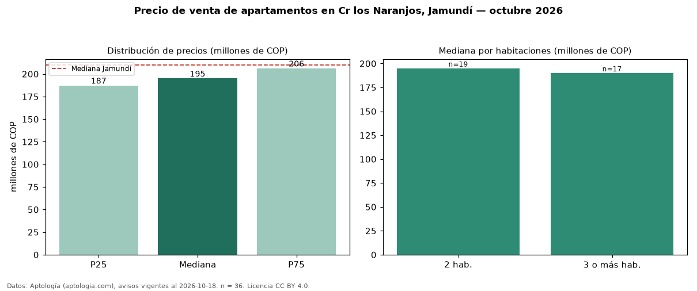

Precio de venta de apartamentos en Cr los Naranjos, Jamundí — octubre 2026
Con 36 avisos vigentes, el precio mediano de apartamentos en venta en Cr los Naranjos, Jamundí es COP 195 millones. Frente a la mediana de Jamundí para apartamentos (COP 210 millones), queda 7 % por debajo. Por metro cuadrado, la mediana es COP 3,14 millones/m² (n = 36 avisos con área), 12 % por debajo de Jamundí (COP 3,58 millones/m²). El área mediana anunciada es 62 m². El segmento con más oferta es el de 2 habitaciones (19 avisos, mediana COP 195 millones); pasar de 2 habitaciones a 3 o más habitaciones cambia la mediana −3 %. La administración mediana declarada es COP 227.500 al mes (n = 34). El estrato más frecuente es 4 (60 % de los avisos con estrato). La mitad central de los avisos va de COP 187 millones a COP 206 millones (razón 1,1), una dispersión baja. Datos: Aptología (aptologia.com), CC BY 4.0 — https://www.aptologia.com/venta/jamundi/cr-los-naranjos. Archivos: PDF, CSV con las cifras y gráfica PNG.

| Avisos únicos | 36 |
|---|---|
| Percentil 25 | COP 187.250.000 |
| Mediana | COP 195.000.000 |
| Percentil 75 | COP 206.250.000 |
| Mediana por m² | COP 3.135.688 |
Fuente: avisos vigentes de portales inmobiliarios recopilados por Aptología, deduplicados (mínimo 30 avisos únicos por celda). Precios pedidos, no cerrados. Fecha: 2026-10-18.